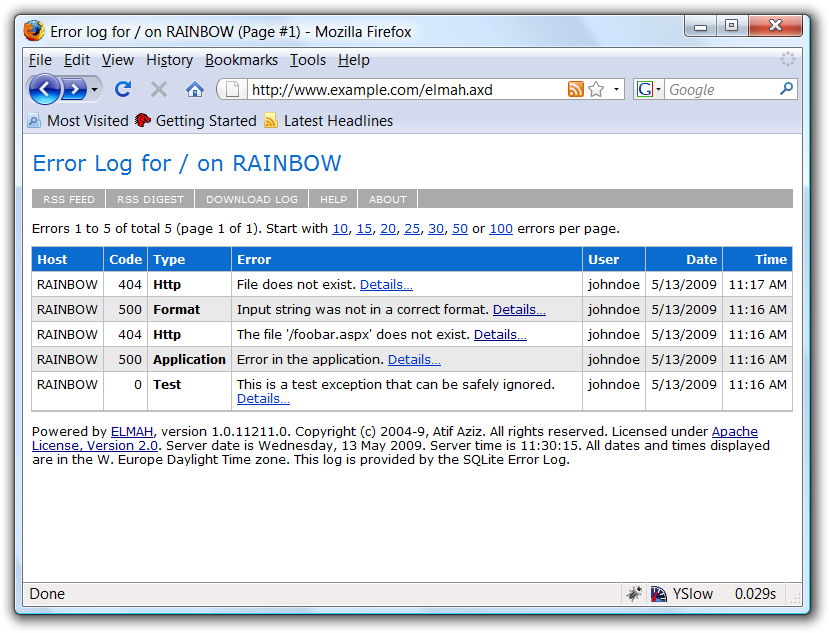

Home
ELMAH (Error Logging Modules and Handlers) is an application-wide error logging facility that is completely pluggable. It can be dynamically added to a running ASP.NET web application, or even all ASP.NET web applications on a machine, without any need for re-compilation or re-deployment.
Once ELMAH has been dropped into a running web application and configured appropriately, you get the following facilities without changing a single line of your code:
- Logging of nearly all unhandled exceptions.
- A web page to remotely view the entire log of recoded exceptions.
- A web page to remotely view the full details of any one logged exception, including colored stack traces.
- In many cases, you can review the original yellow screen of death that ASP.NET generated for a given exception, even with
customErrorsmode turned off. - An e-mail notification of each error at the time it occurs.
- An RSS feed of the last 15 errors from the log.
ELMAH 1.2 Service Pack (SP) 2 now available
See also:
More Features
- Log errors to several back-end storages:
- Microsoft SQL Server
- Oracle (OracleErrorLog)
- SQLite (version 3) database file
- [Access Microsoft Access] (AccessErrorLog)
VistaDB (VistaDBErrorLog); deprecated in release 1.2- Loose XML files
- RAM (in-memory)
- SQL Server Compact Edition
- MySQL
- PostgreSQL
- Supports ASP.NET 1.x, 2.0 and later versions.
- Supports medium trust under ASP.NET 2.0 and later versions.
- Filter unwanted exceptions, programmatically and via configuration.
- Get a digest RSS feed that lists errors by day and up to last 15 days.
- Programmatically and explicitly signal exceptions that, although handled in some way, should still be logged.
- Download the whole error log into a single CSV file for analysis, filtering and charting using Microsoft Excel or Microsoft Log Parser.
- Send error notifications/tweets to your iPhone, iPad or a custom application.
- Access the raw XML behind any logged error from its details page, making it easier to get to information (like form data, including View State) that, until now, had to be grabbed directly out of the error log’s backing store.
- Supports ASP.NET web application root operator (
~) in paths for file-based error log implementations. - Check if any ELMAH installation is up to date through its about page.
- Run a self-contained demo Web site showing error logging and mailing in action right out of the box. Run demo.cmd in the root of the distribution.
- Use
MsAjaxDeltaErrorLogModuleto log errors during partial updates enabled by UpdatePanel in Microsoft ASP.NET AJAX - Use ErrorLogDataSourceAdapter together with ObjectDataSource from ASP.NET to create your own custom views of the error log, almost purely in server-side markup and without a line of code!
- Get error data in JSON (in addition to XML) from the detail page of an error.
- Supports the
|DataDirectory|macro to avoid absolute paths in connection strings. - Use JavaScript to express complex conditions for filtering exceptions in a more concise and familiar manner. See sample web.config for examples.
- Compiled for .NET 1.x and 2.0; run on .NET 1.x, 2.0. 3.x and 4.0.
- Sources include solution files for Visual Studio 2002, 2003 and 2010.
- And, of course, lots of fixes from field testing. Yep, that’s a feature too! :)
ELMAH in Action
Following is a screenshot of Firefox displaying the error log page as provided by ELMAH:

To learn more about ELMAH, see the MSDN article “Using HTTP Modules and Handlers to Create Pluggable ASP.NET Components” by Scott Mitchell and Atif Aziz.